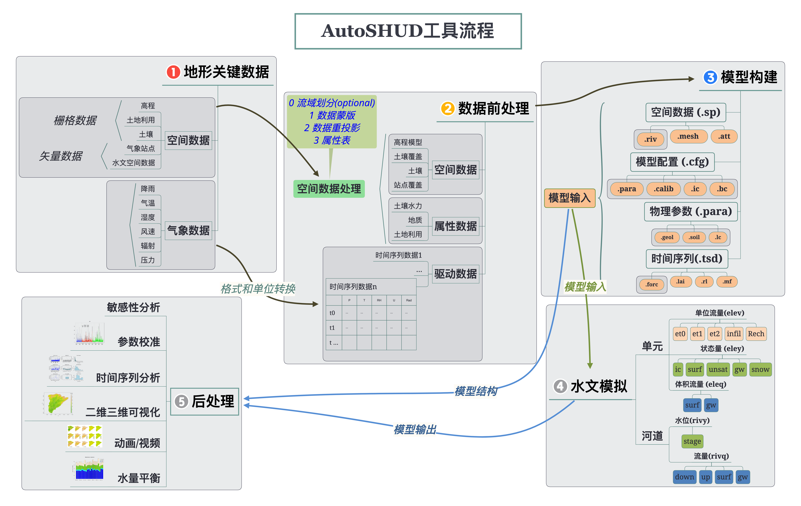

Chapter 4 自动化建模
4.1 简介
autoshud是一个用于快速、可重现和自动部署水文模型的工具，它可以帮助用户从全球数据源截取必要的数据，如高程、土壤、土地利用等，并将其通过空间 计算和分析，制作为SHUD模型运行所需的输入文件；并完成模型模拟，并进行初步数据分析的一系列工具的集合。 autoshud可以利用开放的数据库和空间数据自身特征，自动构建和运行适合不同流域和目标的水文模型，从而提高水文模拟的效率和可重现性。 AutoSHUD工具的价值不仅在提升SHUD模型模拟的效率和灵活性，同时也开创了水文模型自动化、标准化建模的基本范式。
简单来说，autoshud是一个可以自动构建和运行SHUD水文模型的软件。
范式一词指的是科学家在进行科学研究时所持有的世界观和方法论，是一种科学思维和实践的模式。 《科学革命的结构》的作者托马斯·库恩(Thomas Kuhn)认为，范式是一种公认的模型或模式，它为某种科学研究传统提供了范例。这些范例包括定律、理论、应用和仪器设备等。库恩认为，范式反映了科学家集团对本体论、认识论和方法论的基本承诺，是他们共同接受的一组假说、理论、准则和方法的总和，也是他们心理上形成的共同信念。
在水文学或水文模型领域，我们想探索以下几个基本问题：
- 真正影响水文过程的地面要素是什么？地形、地貌、河网拓扑关系、土壤质地、地质背景、土地利用、水利工程？
- 哪些数据或变量能反映这些地面要素？数据如何标准化或规则化？
- 不同水文模型有哪些相同、相似或可移植的过程和方法？
- 水文模型的部署、模拟和结果分析是否具有可重复性？即在相同参数条件下，不同建模者能否得到一致的结果？
- 数据处理、建模和结果分析过程如何减少建模者自身的认知和经验的影响，使之更客观？
4.2 建模思路
AutoSHUD是一自动化SHUD模型部署为案例，探索高效、可重复水文模型部署的基本范式。  上图是AutoSHUD研究所总结的水文建模基本步骤，包括：数据获取、数据前处理、建模、模拟和结果分析。这五个步骤适用于不同的水文模型，但各个模型对这些步骤的要求不同。例如，新安江模型、HBV和FLEX等简单模型，对前三个步骤的需求较低；而基于物理过程的分布式水文模型，特别是数值方法水文模型，对所有步骤都有很高的要求，并且难以让初学者快速掌握。
快速、可重复的水文建模流程中分为5个步骤，但需要注意的是这5个步骤与AutoSHUD程序中的5个步骤并不完全一致。 本研究中水文建模范式第一步是定义和获取关键地理数据，这一步在AutoSHUD的程序中不存在——因为数据已获取并存储于指定位置，是AutuSHUD程序运行的必要条件。因此在AutoSHUD的代码中，Step1和Step2实际上都是数据前处理过程，并不包含数据获取。换句话说，AutoSHUD的代码实际上是从上图第二步开始的。
4.3 建模步骤
4.3.1 建模参数
所有建模参数保存在一个ASCII 文本文件中，其中不仅包含了各种时空数据的保存路径，也包括了建模者的建模要求——或称为建模参数。
建模参数文件是一个\(N \times 2\)的表格。\(N\)为参数数量。某些参数为可缺省参数(表格中加入*变量)。
| 变量名 | 取值类型 | 说明 | 示例 |
|---|---|---|---|
| prjname | Text | 项目名称 | jh |
| startyear | Text | 模拟开始年份 | 1986 |
| endyear | Number | 模拟结束年份 | 2000 |
| dir.out | Number | 工作路径 | ~/RunJH |
| dout.forc | Text | 气象驱动数据输出路径 | ~/forcing_jh |
| fsp.crs* | Shapfile | 投影参数文件，须PCS。 | ~/rawData/wbd_pcs.shp |
| fsp.wbd | Shapfile | 模拟的流域边界 | ~/rawData/wbd.shp |
| fsp.stm | Shapfile | 河流文件 | ~/rawData/river.shp |
| fr.dem | GeoTiff | DEM文件 | ~/rawData/dem.tif |
| fsp.lake* | Shapfile | 湖泊文件 | ~/rawData/Lake.shp |
| Forcing | Number | 驱动数据类别 | 0.5 |
| fsp.forc | Shapfile | 气象站点覆盖数据 | ~/rawData/metero.shp |
| dir.ldas | Text | 气象再分析数据存储路径 | ~/CMFD/Data_03hr_010deg |
| Soil | Number | 土壤数据类别 | 0.1 |
| dir.soil | Text | 土壤数据存储路径 | /repo/Soil/HWSD_RASTER |
| fa.soil | Text | 土壤属性数据路径 | /repo/Soil/HWSD/hwsd.csv |
| fa.geol | Text | 地质属性数据路径 | /repo/Soil/HWSD/hwsd.csv |
| fn.soil | GeoTiff | 土壤分类数据路径 | ~/RunJH/GISdatahwsd.tif |
| fn.geol | GeoTiff | 地质分类数据路径 | ~/RunJH/GISdatahwsd.tif |
| Landuse | Number | 土地利用数据类别 | 0.1 |
| fn.landuse | GeoTiff | 土地利用数据路径 | /repo/USGS_LCI/LCType.tif |
| tab.landuse | Text | 土地利用属性表路径 | /repo/USGS_LCI/LCType.tif |
| NumCells | Number | 最小建模单元数 | 1000 |
| MaxArea | Number | 最大建模单元面积 (km2) | 5 |
| AqDepth | Number | 默认含水层厚度(m) | 10 |
| MinAngle* | Number | 最小三角形夹角(degree) | 30 |
| tol.wb | Number | 流域边界简化阈值(m) | 500 |
| tol.rivlen | Number | 河流最长分段阈值(m) | 500 |
| RivWidth | Number | 一阶河流的截面底部宽度(m) | 4 |
| RivDepth | Number | 一阶河流的截面深度(m) | 3 |
| DistBuffer | Number | 数据处理缓冲区(m) | 2000 |
| flowpath | Number | 是否重新计算河流流向关系（速度较慢） | 0 |
| QuickMode* | Number | 是否快速模型，快速模型会跳过若干步骤，建立最简单模型 | 0 |
| MAX_SOLVER_STEP* | Number | SHUD模型迭代求解的最大时间不长 | 6 |
| CRYOSPHERE* | Number | 是否开启冰冻圈模块 | 1 |
| STARTDAY* | Number | 开始日(天) | 1 |
| ENDDAY* | Number | 结束日(天) | 365 |
详细取值说明
- Forcing取值：
- -1 Dummy. No data provided.
- 0 LDAS mode: 0.1 CLDAS, 0.2 FLDAS, 0.3 GLDAS 0.4 NLDAS 0.5 CMFD 0.6 CMIP6
- 1 Local data: 1.1 Points of metereo-station 1.2 Polygon of coverage
- Soil/Geol取值:
- 0-glocal soil data. 0.1 HWSD, 0.2 ISRIC
- 1-local map + soil texture table. 1.1 Raster, 1.2 Spatial polygon.
- Landuse取值
- 0-global 0.1 USGS LCI
- 1-local data with attribute table. 1.1 Raster, 1.2 Spatial Polygon
AutoSHUD中GetReady.R脚本负责读取建模参数文件，并且加载其中文件和变量值。
4.3.2 Step1. 数据子集提取与数据规则化
这一步的目的是从指定的文件中，以指定的研究区(fsp.wbd)为边界的数据自己，并对基础的空间数据将进行重投影和规则化。
步骤：
- 读取建模参数加载必要工具库。
- 处理建模边界，包括：去孔洞、投影、生成缓冲区等。
- 处理DEM数据，包括：剪切(从原始数据中提取研究区范围内数据)，栅格数据重投影为PCS。
- 河网数据处理，包括：数据重投影、河道线段简化、去除重复点、去除重复线段、河流流向一致性检查/修复等。
- 湖泊数据处理，包括：数据重投影、去除孔洞、边界简化等
- 绘图，对以上数据处理过程中的原始空间数据和结果数据进行绘图，方便用户检查和确认数据对象和处理结果。
4.3.3 Step2. 水文参数和气象数据生成
这一步的主要任务处理包含有水文物理参数的原始数据和气象数据进行处理，包括土壤、地质、土地利用和气象时间序列数据。
步骤：
- 土壤/地质数据，包括：土壤/地质分类数据子集提取、重投影、分类数据属性表提取、根据土壤/地质的属性利用Pedo-Transfer Function计算水力学参数(水平/垂直水力传导度、饱和含水量等)等。
- 土地利用数据处理，包括：土地利用分类数据的子集提取、重投影、建立土地利用属性的水力学参数表（粗糙度、植被根系深度、土壤劣化系数、不透水面比例等）。
- 气象驱动数据处理，包括气象站点（或再分析数据格点）覆盖范围计算、从NetCDF数据中提取研究区数据并保存RDS二进制格式、数据单位转换、保存气象时间序列数据。
4.3.4 Step3. 建模
基于已经进行过预处理的时空数据，构建SHUD水文模型。尽管当前AutoSHUD程序的Step3仅服务于SHUUD模型，但作为一种水文建模的范式，这一步的数据处理过程可根据模型不同而做适应性修改，以适应其他物理性分布式水文模型。
步骤：
- 读取建模参数，生成可用的建模参数，包括最大计算单元面积、流域边界简化阈值、河流简化阈值、模拟天数、计算单元数量等。
- 缓冲区制备。
- 湖泊文件处理。
- 流域单元划分，即由流域边界、湖泊边界、加密区域等空间数据，生成不规则三角网。 并计算单元个体的面积、单元数量等。
- 河网数据处理，包括河流分级、流向验证等。
- 生成泰森多边形的气象站点覆盖矢量数据。
- 空间数据匹配，将土壤分类、地质分类、土地利用分类、气象站点代号等与三角形单元做空间匹配，生成空间属性.att文件(.sp.att)。
- 从DEM等提取河道信息，包括坡度，起始点等；设置河道截面积信息(.sp.riv)。
- 将三角形单元与河流段进行切割，生成河流与三角形交互的河流片段(.sp.rivseg)。
- 生成三角形网、河流段、河流片段的shapefile文件。
- 生成模型初始条件(.cfg.ic)。
- 生成模型运行参数文件(.cfg.para)。
- 利用Pendo-Transfer Function计算水利参数，生成土壤和地质层的水力学参数(.para.soil, .para.geol)。
- 生成土地利用参数表(.para.lc)
- 将模型输入的数据及参数写入指定文件。
- 自动绘制建模过程中的图件。